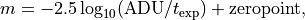
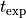
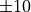

Galfit auto-routines¶
Code author: Wilfried Mercier - IRAP <wilfried.mercier@irap.omp.eu>
Functions related to automating galfit modelling.
-
galfit.galfit.genConstraint(dicts)[source]¶ Code author: Wilfried Mercier - IRAP <wilfried.mercier@irap.omp.eu>
Make a galfit CONSTRAINT file.
- Parameters
constraintNames (list[dict]) – list of constraint dictionaries. See
run_galfit()for more information.- Returns
CONSTRAINT file as formatted text
- Return type
str
- Raises
TypeError –
if dicts is not a list
if ‘type’ key in constraint dict is not an acceptable value
if ‘components’ key in one of the dict is not a list
if ‘value’ key in one of the dict is not a list
KeyError – if neither ‘parameter’, nor ‘constraints’, nor ‘components’ keys are found in the dictionaries
ValueError –
if ‘parameter’ key in one of the dict is not an acceptable value
if ‘components’ key in one of the dict does not have the correct length
if ‘type’ key in one of the dict does not have the correct length
-
galfit.galfit.genFeedme(header, listProfiles)[source]¶ Code author: Wilfried Mercier - IRAP <wilfried.mercier@irap.omp.eu>
Make a galfit FEEDME configuration file using the given profiles.
- Parameters
header (dict) – (Optional) dictionnary with key names corresponding to input parameter names in :py:func:genHeader function
listProfiles (list[dict]) – (Optional) list of profiles (models). See
run_galfit()for more information.
- Returns
FEEDME configuration file with header and body as formatted text
- Return type
str
- Raises
ValueError – if ‘name’ key in one of the profiles is not an acceptable value
KeyError – if ‘name’ key is missing in one of the profiles
-
galfit.galfit.genHeader(inputImage='none', outputImage='output.fits', sigmaImage='none', psfImage='none', maskImage='none', couplingFile='none', xmin=0, xmax=100, ymin=0, ymax=100, sizeConvX=None, sizeConvY=None, psfSamplingFactor=1, zeroPointMag=30.0, arcsecPerPixel=[0.03, 0.03], displayType='regular', option=0)[source]¶ Code author: Wilfried Mercier - IRAP <wilfried.mercier@irap.omp.eu>
Constructs a galfit FEEDME header as general as possible.
- Parameters
inputImage (str) –
name of the input .fits file.
Note
If “none” is given, when running the feedme file, the fitting will be skipped and a model will be generated using the provided parameters.
outputImage (str) –
name of the file within which the image will be stored.
Note
Technically, the output “image” is not an image but a (1+3)D fits file, where:
layer 0 is a blank image whose header contains the fits keys
layer 1 is the original image within the fitting region
layer 2 is the model image
layer 3 is the residual between the model and the original image.
The residual is computed by subtracting layer 2 from layer 1.
Hence, if any galaxy component is missing in the model image (even if it was optimised), the residual will not reflect the “fitness” of fit.
xmax (int) – maximum x coordinate of the fitting region box (in pixel)
xmin (int) – minimum x coordinate of the fitting region box (in pixel)
ymax (int) – maximum y coordinate of the fitting region box (in pixel)
ymin (int) – minimum y coordinate of the fitting region box (in pixel)
float] arcsecPerPixel ([float,) – (Optional) angular resolution (in arcsec) of image pixels. First element is the angular resolution in the x direction, second element in the y direction.
displayType ("regular", "both" or "curses") –
(Optional) galfit display mode
”Regular” mode does not allow any interaction
”Both” and “curses” modes allow you to interact with galfit during the fitting routine (both will display a xterm terminal).
couplingFile (str) – name of the CONSTRAINT file used to add constraints on parameters
maskImage (str) –
name of the image with bad pixels masked. Possible options are:
a .fits file (with the same dimensions as the input image) with a value of 0 for good pixels and >0 for bad pixels
an ASCII file with two columns separated by a blank space (first column x coordinate, second y coordinate) listing all the bad pixels locations
option (int) –
option
if 0, galfit run normally as explained above
if 1, the model image only is made using the given parameters
if 2, an image block (data, model and residual) is made using the given parameters
if 3, an image block with the first slice beeing the data, and the followings ones beeing one (best-fit) component per slice
psfImage (str) – name of the psf image (fits file)
psfSamplingFactor (int) – multiplicative factor used to scale the image pixel angular scale to the psf pixel angular scale if the psf is oversampled. Technically it is the ratio between the psf platescale (in arcsec/px) and the data platescale assuming the same seeing.
sigmaImage (str) – name of the so called variance map (technically standard deviation map) where the value of the standard deviation of the underlying distribution of a pixel is given in place of the pixel value in the image (fits file only). If “none”, galfit will compute one.
sizeConvX (int) – x size of the convolution box (in px)
sizeConvY (int) – y size of the convolution box (in px)
zeroPointMag (float) –
zero point magnitude used in the definition

where  if the exposition time (generally found in the input .fits file header).
- Returns
header as a formatted string
- Return type
str
-
galfit.galfit.modelFunctions= {'bending': <function bendingModes>, 'boxyness': <function boxy_diskyness>, 'deVaucouleur': <function gendeVaucouleur>, 'edgeOnDisk': <function genEdgeOnDisk>, 'expDisk': <function genExpDisk>, 'ferrer': <function genFerrer>, 'fourier': <function fourierModes>, 'gaussian': <function genGaussian>, 'king': <function genKing>, 'moffat': <function genMoffat>, 'nuker': <function genNuker>, 'psf': <function genPSF>, 'sersic': <function genSersic>, 'sky': <function genSky>}¶ Recognised models
-
galfit.galfit.myPDFViewer= 'okular'¶ Default pdf viewer
-
galfit.galfit.run_galfit(feedmeFiles, header={}, listProfiles=[], inputNames=[], outputNames=[], constraintNames=[], pathFeedme='./feedme/', pathIn='./inputs/', pathOut='./outputs/', pathConstraints='./constraints/', pathLog='./log/', pathRecap='./recap/', constraints=None, forceConfig=False, noGalfit=False, noPDF=False, showRecapFiles=True, showLog=False, divergingNorm=True, numThreads=8)[source]¶ Code author: Wilfried Mercier - IRAP <wilfried.mercier@irap.omp.eu>
Run GALFIT given some models and a header. If necessary, it creates GALFIT config files.
If the FEEDME and CONSTRAINT files already exist, just use the following command to run GALFIT on all the galaxies
>>> run_galfit(yourList)
where yourList is a list of FEEDME files.
Note
If at least one FEEDME file does not exist, the following information must be provided
a header
a list of profiles (models)
input (HST) file names
See
writeConfigs()function for more information.Using the correct optional arguments, one can skip the following steps:
FEEDME and CONSTRAINT files creation by setting forceConfig to False. This is done by default in order to avoid to destroy already existing input files.
GALFIT modelling by setting noGalfit to True. This can be useful if one only wants to make the pdf recap files when the modelling has already been done.
generating pdf recap files at the end of the program by setting noPDF to True
opening of the recap files at the end of the program by setting showRecapFiles to False
showing the content of the LOG file once the fit is complete by setting showLog to False. By default, LOG files are not shown.
- Parameters
feedmeFiles (list[str]) – name of the GALFIT FILES to run galfit onto
divergingNorm (bool) – (Optional) whether to use a diverging norm in the output pdf figure or not
constraints (list[dict]) –
(Optional)
list of dictionaries used to generate the constraints. If None, no constraints are applied.
Each dictionary must contain three keys, namely ‘components’, ‘parameter’ and ‘constraint’ (see below for use cases):
’constraint’ : dict with keys ‘type’ and ‘value’
This sets the type of constraint one wants and its range. The possible ‘type’ of constraints are:
’offset’ to set the value of some parameter between different profiles relative to one another (based on the initial values provided in the FEEDME file)
’ratio’ to fix the ratio of some parameter between different profiles (based on the initial values provided in the FEEDME file)
’absoluteRange’ to set an asbolute range of values for some parameter
’relativeRange’ to set a range of possible values around the initial value given in the FEEDME file
’componentWiseRange’ to set a range of possible values around the initial value of the same parameter but from another component
’componentWiseRatio’ to set a range of possible values for the ratio of the same parameter in two components
And the corresponding values are:
single value for ‘offset’ and ‘ratio’ types
a list of two floats to define bounds for the other types
’components’ : int or list[int]
The number(s) associated to the model(s) one wants to constrain:
for ‘offset’ and ‘ratio’ types a list of an indefinite number of int can be given
for both relative and absolute ranges, a single profile number (int) must be given
for component wise ranges or ratios, a list of two numbers (int) must be provided
’parameter’ : str
Name of the parameter to contrain.
Example
Let us assume we want to model two Sersic components such that we have
listProfiles=[sersic1, sersic2]where>>> sersic1 = {'name':'sersic', 'x':81, 'y':60, 'n':1, 'fixedParams':['n'], 're':10, 'mag':25, 'PA':40} >>> sersic2 = {'name':'sersic', 'x':81, 'y':60, 'n':4, 'fixedParams':['n', 'PA', 'bOvera'], 're':2, 'mag':25}
Assume we want to constrain the X coordinate of
sersic1andsersic2to always be similar, then we can do>>> c1 = {'components':[1, 2], 'parameter':'x', 'constraint':{'type':'offset', 'value':0.0}}
Similarly, for the Y coordinate, we can do
>>> c2 = {'components':[1, 2], 'parameter':'y', 'constraint':{'type':'offset', 'value':0.0}}
In both cases, the number 1 refers to the first model appearing in listProfiles (i.e.
sersic1), and the number 2 tosersic2.Additionnaly, let us say we want to force the X and Y coordinates to be allowed to change by  relative to the initial value. This can be done with
>>> c3 = {'components':1, 'parameter':'x', 'constraint':{'type':'relativeRange', 'value':[-10, 10]}} >>> c4 = {'components':1, 'parameter':'y', 'constraint':{'type':'relativeRange', 'value':[-10, 10]}}
Now, it still remains to build the constraint list, so that we write
>>> constraint = [c1, c2, c3, c4]
And we provide
constraints=constraintwhen callingrun_galfit().forceConfig (bool) – (Optional) whether to make all the configuration files no matter if they exist or not
header (dict) –
(Optional) dictionnary with key names corresponding to input parameter names in
genHeader()functionNote
You do not need to provide an input and an output image files as this is given with the inputNames keyword.
inputNames (list[str]) – (Optional) list of galaxies input .fits files
listProfiles (list[dict]) –
(Optional) list of profiles (models). Each dictionnary corresponds to a profile:
A key ‘name’ is mandatory to indentify the profile. Its value is one of the following:
’deVaucouleur’ for a de Vaucouleur profile
’edgeOnDisk’ for an edge-on (razor-thin) disk
’expDisk’ for an exponential disk
’ferrer’ for a Ferrer profile
’gaussian’ for a Gaussian
’king’ for a King profile
’moffat’ for a Moffat profile
’nuker’ for a Nuker profile
’psf’
’sersic’ for a Sersic profile
’sky’ for a sky gradient
Other keys correspond to the parameters corresponding to each profile. See each profile description, to know which key to use. Only mandatory parameters can be provided as keys if the default values seem fine to you
Note
You can also add fourier modes, bending modes and/or a boxyness-diskyness parameter to each profile. To do so, provide one of the following keys:
’fourier’
’bending’
’boxyness’
These keys must also contain dictionnaries whose keys are the parameters of the functions
fourierModes(),bendingModes()andboxy_diskyness().Example
Let us assume we want to model two Sersic components such that we have
listProfiles=[sersic1, sersic2], wheresersic1is an exponential disk (Sersic with n=1), andsersic2is a de Vaucouleurs bulge (Sersic n=4) with fixed axis ratio and PA.If we look at the function declaration for the
genSersic()function we find the following parametersdef genSersic(x=50, y=50, mag=25.0, re=10.0, n=4, bOvera=1.0, PA=0.0, skipComponentInResidual=False, fixedParams=[], comments=None, noComments=False):
For the exponential disk, we only need the Sersic index to be fixed, and we can plug typical values for the other parameters
>>> sersic1 = {'name':'sersic', 'x':81, 'y':60, 'n':1, 'fixedParams':['n'], 're':10, 'mag':25, 'PA':40}
For the de Vaucouleur bulge, we use the same centre, a slightly smaller bulge, and we also fix the
PAandbOvera>>> sersic2 = {'name':'sersic', 'x':81, 'y':60, 'n':4, 'fixedParams':['n', 'PA', 'bOvera'], 're':2, 'mag':25}
We do not provide the
'bOvera'and'PA'values because default values arebOvera=1andPA=0which is perfect for this example.noGalfit (bool) – (Optional) whether to not run galfit or not
noPDF (bool) – (Optional) whether to make the pdf recap files or not
numThreads (int) – (Optional) number of threads used to parallelise
outputNames (list[str]) – (Optional) list of galaxies output .fits files. If not provided, the output files will have the same name as the input ones with _out appended before the .fits extension.
pathFeedme (str) – (Optional) location of the feedme files relative to the current folder or as an absolute path
pathIn (str) – (Optional) location of the input files relative to the current folder or as an absolute path
pathLog (str) – (Optional) location of the log files relative to the current folder or as an absolute path
pathOut (str) – (Optional) location of the output files relative to the current folder or as an absolute path
pathRecap (str) – (Optional) location of the pdf recap files relative to the current folder or as an absolute path
showLog (bool) – (Optional) whether to show log files or not
showRecapFiles (bool) – (Optional) whether to show the recap files made at the end or not
- Raises
TypeError – if feedmeFiles is not a list
Additional tag functions
-
galfit.galfit.writeConfigs(header, listProfiles, inputNames, outputNames=[], feedmeNames=[], constraintNames=[], constraints=None, pathFeedme='./feedme/', pathIn='./inputs/', pathOut='./outputs/', pathConstraints='./constraints/')[source]¶ Code author: Wilfried Mercier - IRAP <wilfried.mercier@irap.omp.eu>
Make galfit FEEDME and CONSTRAINT files using the same profiles.
- Parameters
header (dict) – dictionnary with key names corresponding to input parameter names in genHeader function. See :py:func:run_galfit for more information.
inputNames (list[str]) – list of galaxies input .fits files
listProfiles (list[dict]) – list of profiles (models). See :py:func:run_galfit for more information.
constraintNames (list[str]) – (Optional) list of CONSTRAINT files. If not provided, the constraint files will have the same name as the input ones but with a .constraints extension at the end.
feedmeNames (list[str]) – (Optional) list of FEEDME files. If not provided, the feedme files will have the same name as the input ones but with .feedme extensions at the end.
outputNames (list[str]) – (Optional) list of galaxies output .fits files. If not provided, the output files will have the same name as the input ones with _out appended before the .fits extension.
pathFeedme (str) – (Optional) location of the feedme files relative to the current folder or as an absolute path
pathIn (str) – (Optional) location of the input files relative to the current folder or as an absolute path
pathOut (str) – (Optional) location of the output files relative to the current folder or as an absolute path
constraints (dict) – (Optional) list of dictionaries used to generate the constraints. If None, no constraints are applied. See :py:func:run_galfit for more information.
- Raises
ValueError – if inputNames, outputName, feedmeNames and constraintNames are not iterables of the same length
OSError – if pathIn, pathOut, pathFeedme or pathConstraints are not correct path